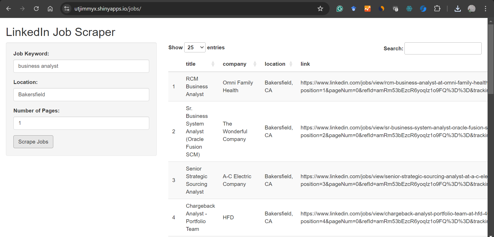

1 + 1[1] 2AIS Doctor offers customized data scraping and analysis consulting services for young scholars ,Ph.D students, and small businesses. We have a dedicated team who will take care of your needs and help you with your project.
Do you spend a significant amount of your budget for collecting data? If so, there might be a more efficient way to do that by leveraging r or Python.
For data in simple format or smaller size, the simplest approach is to copy and paste.
Websites like Yahoo finance, Google Trends, Reddit, and many others have public APIs that facilitate data collection using open source software and API keys.
rvest is very similar to the Python library of beautifulsoup for Python users. Below is an example of collecting top news from Sina.com and display the top 6 results from the data.
You will need some basic knowledge of how html works.
In this tutorial, we used rvest, the dplyr packages, and a few lines of syntax to scrape the top news.
In R, we can use html_elements along with the CSS selector to identify html elements. Here, “a.linkNewsTopBold” is the html elements associated with the top news at finance.sina.com.cn. Please keep in mind that these elements may change over time.
# Define the URL
url <- "https://finance.sina.com.cn/"
# Read the webpage content
webpage <- read_html(url)
# identify the html elements using the css selector first
headlines <- webpage %>%
html_nodes("a.linkNewsTopBold") %>% # adjust the selector based on the HTML structure
html_text()
head(headlines)[1] "指数午后跌幅收窄 证券板块盘中拉升"
[2] "直播中国牛市!"
[3] "国家发改委:出台有力有效系列举措 努力提振资本市场"
[4] "紧扣\"两强两严\"目标 Q3对291起违法违规采取监管措施"
[5] "我国计划2026年底基本建成国家数据标准体系"
[6] "多家公司三季报业绩预增 半导体人工智能景气向好" By leveraging the power of R and open source libraries, you can analyze text data and examine the sentiments and the meaning of textual data in real time. You can also analyze the sentiments of news articles by scraping articles in batch.
 Link available here:https://utjimmyx.shinyapps.io/jobs/
Note: refresh if the server is busy.
At Ais Doctor, we offer customized services in data scraping and analysis. We thank you for your time and effort. Let us know your data collection needs and will help you!
calendR. https://github.com/R-CoderDotCom/calendR Web scraping using R. https://r4ds.hadley.nz/webscraping